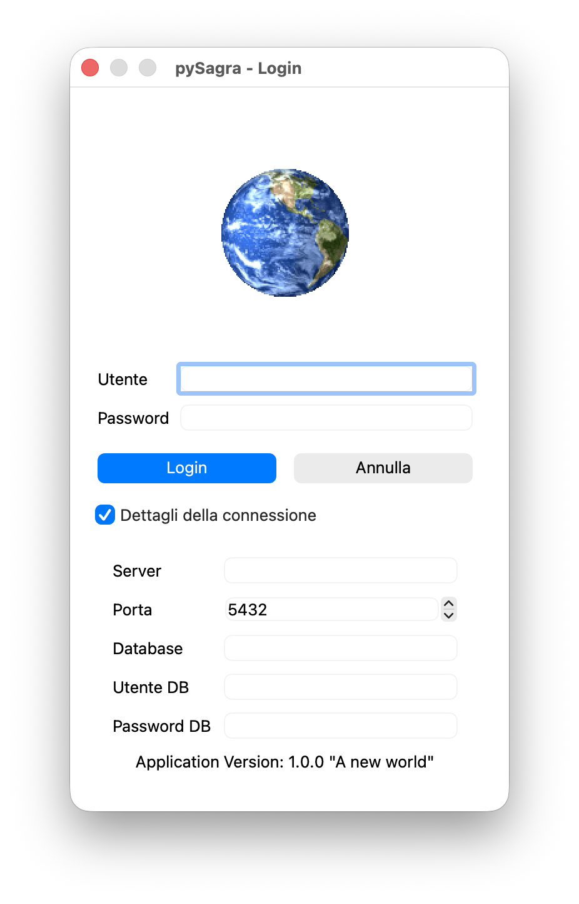
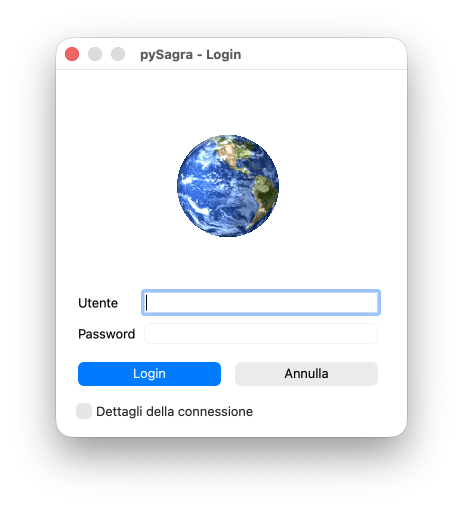

Documentazione su pySagra
Procedura di login
Al primo avvio dell'applicazione vengono richiesti i parametri di connessione
al server e la finestra si presenta come in figura:

I parametri richiesti per effettuare la connessione al
database server sono:
-
Utente: inserire il nome utente applicativo
-
Password: inserire la password associata all'utente
selezionato. Può essere non obbligatoria in base a
come è configurato il meccanismo di autenticazione
degli utenti. Ci sono 2 utenti predefiniti e non modificabili:
- system con password System@1
- utente con password utente
-
Server: inserire il nome del computer che svolge il
ruolo di server di database. E' possibile inserire anche
l'indirizzo ip del server (es. 192.168.1.1). Se il
programma viene eseguito sullo stesso computer dove
è in esecuzione il database server è
possibile inserire il nome computer 'localhost' oppure l'ip
127.0.0.1
-
Porta: indicare la porta TCP da utilizzare per la
connessione. Tipicamente nelle installazioni di PostgreSQL
viene utilizzata la porta 5432, chiedere all'amministratore
di rete nel caso si utilizzi una porta diversa
-
Database: indicare il nome del database al quale
collegarsi
La prima volta che si accede ad un server TUTTI questi
parametri devono essere valorizzati. Le volte successive
vengono riproposti gli stessi parametri già utilizzati
con successo in precedenza ad esclusione del nome utente e
della password:

Per modificare i parametri inseriti cliccare sulla casella Dettagli della connessione